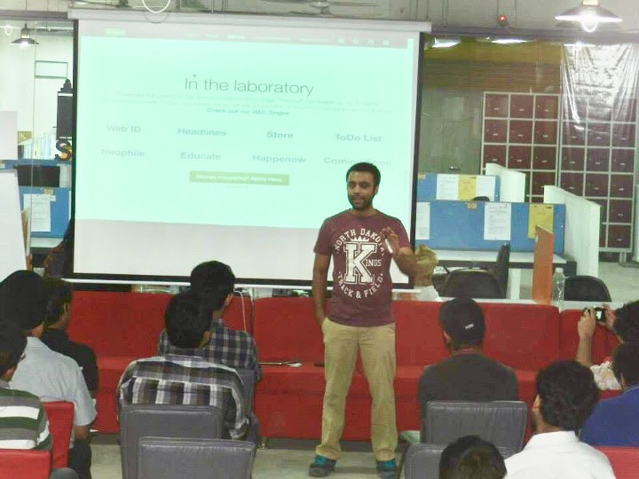
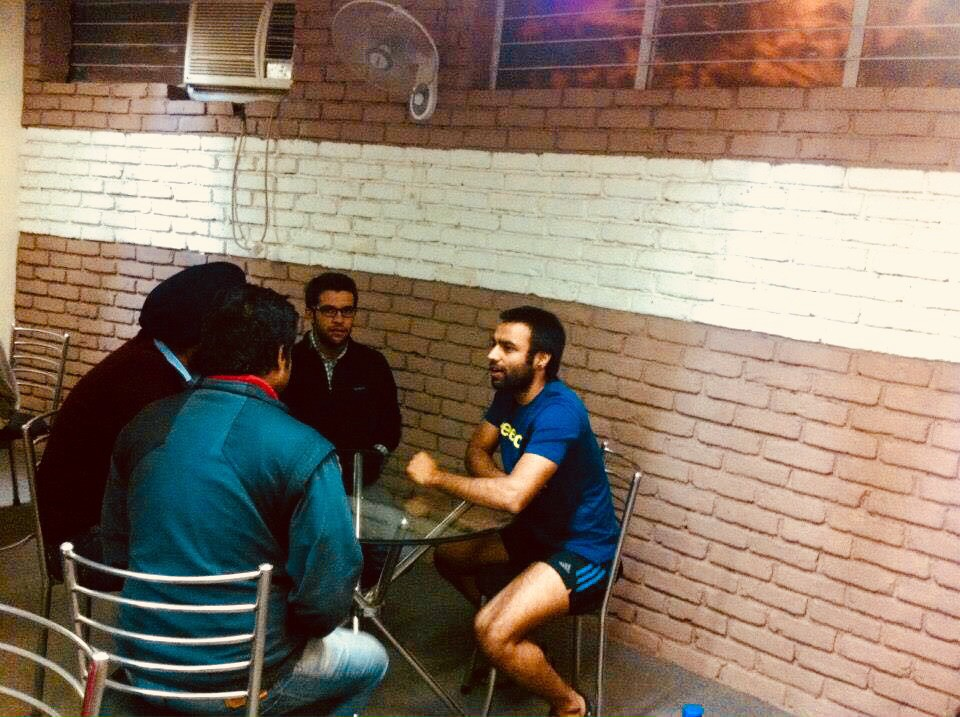

Read the whole thread of this tweet made of a tweet by Anand hi, followed by my tweet and then Neha’s tweetEven as a tech entrepreneur from NYC I have not known anyone who knows about social networks as much as you do. @anandmahindra may be among the only few who can see what you know to be true for 10 yrs. @Chattodonow Chattodo is a VERY important product. World needs your vision
— nehakesarwani21@gmail.com (@NehaKesarwani21) June 12, 2020
This tweeted image will make more sense to you if you have read all the previous chapters.@anandmahindra give me .5x of your previous amount & double the time invested, in considering my social network. I promise over a 5x of the other social networks kind of return to you & the world. Help make my team spend 10 hours a day with me, without worrying about salaries. pic.twitter.com/qsuFuVeJGU
— Nishchal Foolish Kesarwani (NFK) (@Nishchal) June 15, 2020
"Silently, I was fighting for for justice and equality in education system. Now I will fight for truth, justice and equality among men and women too". - Nishchal. To explore the extreme side of Nishchal represented by the latter, check out the not for profit - www.gencosys.org.
Of the endless trains of the faithless, of cities fill’d with the foolish,
Of myself forever reproaching myself, (for who is more foolish than I, and who more faithless?)
Of eyes that vainly crave the light, of the objects mean, of the struggle ever renew’d,
Of the poor results of all, of the plodding and sordid crowds I see around me,
Of the empty and useless years of the rest, with the rest me intertwined,
The question, O me! so sad, recurring—What good amid these, O me, O life?
Answer:
That you are here—that life exists and identity,
That the powerful play goes on, and you may contribute a verse.
2. His courageous way of being, leading and creating.
3. His ability to execute those ideas to become MVPs without a single penny. (This is the most important point: it would have reduced the cost of important experimentation in India by more than 4x, just as it has done for our organisation because of his bility to replace money with inspiration among one and all in our team, leading to really low costs of creation so far).
4. His ability to communicate extremly complex ideas as smaller fragments effectively and inspiringly with our globally distributed remotes teams.
6. His courage to do before anyone else and his ability to face odds before anyone else will face them.
He leads before he eats and he has only gotten started.
1. That people don't always need advice, sometimes they just need a hand to hold, an ear to listen and a heart to understand.
2. After he has understood that just listening to you is not enough, you need advice, then his way of holding hand comes in. It comes from his vast sea of imagination and knowledge. He delivers it through, non-sugary words. That is his way of love. His way of love is in being, firstly a good listener and then a good advisor. His advise comes without filters. Be ware, for, if he corrects you and you feel offended, then you have an ego problem. And if you have that problem, you may not survive Nishchal for too long.
To us Nishchal is not an objective asshole. He is an all-seeing eye, on a mission. And in that journey, he cares about no one, not even himself, more than the mission itself. For it is in this mission he can actually take better care of one and all.
Even the strongest men in his situation would begin to conform to norms. Yet, he is not the man who will succumb to circumstances. Many times over the last 10 years he has hit rock bottom. Every penny he makes, he invested in his software whims to do good in this society. He continued to compensate his teams, over and above his own survival, to at times sleep with no roof, cash, food and phone. Even his family lost all of it a long time ago when he was barely 20. He was pressed by his family and well wishers to take up a job, for he was receiving lucrative job offers by the day. He was criticized by those who ones loved him. A person in his situation should have not survived. In this period of struggle, no one came to his aid. He kept his head held high, didn’t take up a job and still sails forward like a warrior on his mission to free the world from present structures, boundaries and meanings. This journey is leading him into a true story of rarest courage and conviction, as it unfolds before the world, in more action than words, over a long period of time.
He lives in the world of extraordinary ideas, idealism, inspiration, simplicity, a bicycle, a backpack, some yoga and lots of action. He questions, inspires and teaches us to be who we are becoming on this journey together. He does this in his well informed, imaginative, idealistic, bold and democratic style of leadership, unique only to him. He is Preseed’s first resident Yoga exponent and researcher.
He is in his early 30s, and has a way to express his theory of no god or the origin of the universe, its end and what after the end, without using religion and mysticism. We have never known anyone who can express such complex ideas with such ease, passion and simplicity. When one asks him, how do you know all this and how do you dabble between spirituality and the material world of technology. He says, "Firsly, none of what I know is my own. It is all just flowing through me. The reason for that is resonation. I am at the same frequency as the fundamental truth itself". And then he goes on to explain how energy flows into each other and how shapes and forms take place. So, one of his favourite quotes is -
"I think the trouble with being a critical thinker or an atheist, or a humanist is that you’re right. And it’s quite hard being right in the face of people who are wrong without sounding like a fuckwit. People go ‘Do you think the vast majority of the world is wrong?’ Well, yes. I don’t know how to say that nicely, but yes." - TIM MINCHIN
1. Karma - His purpose is to work in the area of liberating people through technology entrepreneurship of the righteous intent, so that at least some of them could truly and soulfully do that what is meaningful to their soul.
2. Dharma - He walks the path of karma also to help (wo)mankind make progress through their own actions towards liberating them from their non scientific and rigid beliefs of life and universe, so that they could do what they find harmony in. Hence, his purpose is also to ensure that the soul is not ignored any more. His purpose is to understand and impart the awareness of the god's vibe through yoga.
3. Seva - His purpose is to ensure that each life he touches on this journey to building products gets truly served in their righteous progress. This is how he perceives the value of his products, not through the value of money.
The things he do in a day, enable him to stumble upon many teams with good ideas and a strong will to build further upon their ideas, through their skills, perhaps even a sound prototype, logistical and back end capabilities. Almost invariably, if he finds them good enough to ping his mind, he would have views for them that could help them make further progress. But these views are not mere theoretical views, these are strategies that need to be executed beyond the current capabilities of the prototype team. So, in order to help these teams at different stages of the startup life cycle we have allowed for such teams to engage with Nishchal directly. Although, this will be useful when startup teams are willing to stay focused on the strategy proposed by Nishchal, above all else.
Freedom of the mind is a concept in theory, without the freedom of the body" - BKS Iyengar
To truly know him, we highly recommend that you see him in person, watch him dance and hear him talk. Be touched by his contagious smile, rare courage, all rounded genius, and exceptional intensity. However, if you can’t get in touch with him in person, then simply read his first drafts of somethings that matter to him, written on his medium essays. Also, read about him from his personal bio in his own words written in 2011 here and here, directed towards the entrepreneurs who seek him.
We Know:
PEOPLE DON'T ALWAYS NEED ADVICE. SOMETIMES ALL THEY REALLY NEED IS A HAND TO HOLD, AN EAR TO LISTEN, AND A HEART TO UNDERSTAND THEMYet:
If someone corrects you, and you feel offended, then you have an ego problem. - Nouman Ali KhanIf you want Nishchal, remember these two quotes.
When the result of the actions upon these ideas, stories and inspiration takes its first real form that can be demoed to such investors and customers, as per us; the startup is hand held by me personally.
Below are photos from Nishchal's various talks that had moved and shaken some humans and ideas,
into
newer shapes and forms.

Nishchal is not a conventionally educated man. He dropped out of college. However, he is an extremely learned and observant man, but most importantly, he is a meditative man. He learned his early entrepreneurial lessons by leading a team of extraordinary men and women while he was only 23. To know who were the people he led in his first company FloEco India Pvt. Ltd., and what they went on to become, click on their names to know these global stars — Parag Arora(YC), Siddharth Khattri(Google & Techstars), Neha Kesarwani (cofounder www.vertoe.com), Kabeer Jain, Siddharth Yadav, Vinay Yadav, Puneet Bharti, Akshay Gupta, Mustafa Shahansha, Puneet Bharti, Varun Rajput, Atul Agarwal, Radhika Kapoor and Jatin Agarwal. This was his first team, and he was their first captain. He has a knack for identifying talent before it reaches the rest of the world. It may have been painful to have lost that team, and starting from scratch, from that rock bottom. This situation must have had something to do with Nishchal's new found raised bar at Preseed.

Somewhere along the way, Nishchal got offers from companies like 91 Springboard and Embibe, by their charismatic founders to join them as a co-founder and director. He had to politely turned those offers down by those game-changing men and women. Nishchal was to be on a mission of his own. Something only he may be destined to do. Today those businesses are at over 200 million dollars in valuation, while Nishchal is building a Chinese bamboo. It is deeper below the ground than above it.

To say the least, his constant advice will help you understand your business ahead from some new standpoints, perhaps, over a noticeable period of time. He will prepare you for your investment/incubation readiness. The slide deck you will make together will help you raise investment. However, that is the least of the reasons he will help you in the making of a right Slide Deck. What is the most important reason he will do this exercise for? This is the process with which he will reveal your company to you with some new standpoints. His questions to you, and your understanding thereafter can make all the difference.

Over the years his $100,000 backed startup failure with the above-mentioned star-studded team in 2010 at his ripe age of 25, to starting Preseed as a community in 2012, up to now, Jan 2014, he often finds himself and his team advising a lot of business owners and friends, who have come to us seeking his advice on new ways to do business in the new, ever changing age of free information and free tools.
However, he has been so caught up until now in building from the ground up, upon his own ideas listed at Preseeded and that he never formally got the time to start our consulting for such businesses and startup friends out there, even though in his personal capacity, in the past, he has advised and executed for companies like —
1. Libra Mattresses (among the top 5 mattress manufacturers in India) - Nishchal aided them in 2009–10 in improving their brand and design. They give his team's designs the credit for making one of their foam product their best seller.
2. Jeet India Limited (a SME in food and beverage) — In 2009–10 Nishchal with his team (that later placed in organizations like google and O&M) worked on their brand, their packaging, their ERP, their IT infrastructure etc.
3. Invest Care — In early 2011 Nishchal and his team deployed IT infrastructure solutions for them through his other co-founded startup called BizOnTech. (Note-: He dropped out of BizOnTech soon after to split from that team, to focus on something more inspiring, that now is called Preseed).
4. Om Sai Global — In the mean while to make ends meet Nishchal started advising Om Sai Global on harnessing the internet better and graduated to training their teams. Soon after he became the CEO there for a brief period of 3 months as that allowed him more authority to attempt some overhauling in their company. He did not continue thereafter for he was not motivated to serve real estate business.
5. Many more such business consulting stints happened till 2011 December, when he finally decided to not work as a consultant to SMEs anymore, to focus back on what mattered to him the most. What mattered to him the most was building Preseeded, which of course in those days around the mid of 2011 was just a thought in his mind, without a form. For Preseeded, Preseed had to happen first. So he started building Preseed.
His main interest of work always lied in building startups from bottom-up, for that leaves more room for some soulful innovation. He liked to innovate on even the way businesses are managed, let alone the product the business is building. His appetite for technology and good design transcends by far the appetite for technology and good designs in most businesses in India. (Although, ironically, in spite of having the skills and sensibilities, he is unable to devote time to improve designs on his own website :p).
His biggest challenge in consulting SMEs was that they often lacked the creative work force needed to execute what my advise may have contained for them. Hence, it was a fair decision by all regard to stop advising others to focus back on starting up a business that fulfilled his desire to co-build important things that mattered. So, if you are building something important, that leads people to experience greater freedom in his perspective, count him in.

A hand full of action oriented, extraordinary humans that I can make great timely impacts with the help of, through the collective of their startups and our mind.
Thes are some of the projects Nishchal advised or connected, often for no benefits. Just out of his love for entrepreneurs:
1. GameXS.in — Helped them raise their seed investment in 2014–15.
2. Ebikego — Nishchal advised them and made way to have them get a consultant who eventually was hired into their management team.
3. Zipgo — Nishchal connected two entrepreneurs Jitendra and Pritesh for he felt they were headed for a common goal. After a few years, they cofounded ZipGo and ended up raising $55 million together.
4. 91springboard — Connected the cofounder of 91 Springboard, Varun Chawala with someone whose company Varun acquired for his father’s travel business.
5. Co-living and homestays — Spent ample time exploring accommodation industry with a friend Minakshi as a potential partner. Nishchal and Ritesh Agarwal, founder, OYO once lectured together about the entrepreneurship and the accommodation industry in India.
6. LawClik — A firm we are looking to lay our mind and connection to, to make a dent in the legal industry with. The founder is a friend who often collaborates with Nishchal over their legal industry tech thought.
7. eduSquare — I am involved with them as a friend over matters of their growth. Soon we will translate this friendship into a business handshake.
8. www.IVAT.Com — I have been offered to join them as a co-founder. This deal is under negotiation
9. Delhi Furniture Company
10. DIY Guru — An education company that can lead Indian students into contemporary education about mobility. Nishchal is looking to find an investor for them.
11. Potbelly — Its an award-wining restaurant chain of regional food, and it is winning. Nishchal helped them hands on during the first few months of Potbell’s start.
When I was starting Preseed, I used to tell people that I am going to build a
company where I could float my many ideas and see them take shape.
The first step to building a company like that, was to build a culture like that
of a hand full of people who believed in not only my ideas but my world views.
The next step was to instill so much inspiration in them all that they go all
the way to enable me or assist me further to shape up those ideas.
The next step was to put them in order, a system, a set of protocols.
Now comes the next step. The step in which we create a very simple modal box for
each idea of ours and link it with MyIdealist, earlier called Idealistr.
This complete step if done right, including marketing, will have the potential
to blow things out of proportion for us, meaning, since the cost of
experimentation at Preseed is unbelievably low because of our altrusitic and
courage filled works, at such lower costs, now almost all our ideas can start
taking shape, from the moment we find an inspired hacker who is intrinsically
motivated to build that product with us, for reasons not only limited to the
goodness in the idea of the product, but because he sees the goodness in teaming
up with us.
Similarly, MyIdealsit, will give you the dashboard to publish your ideas that
you have deeply thought of and from that moment on, would like to publish to be
read by your future teams.
This project will move forward to becoming a simple mobile app where your
network will get instantly notified everytime a new idea is added, so that they
can go to it's link on MyIdealist and know more about the idea or start a
dialogue with you about it right there.
There will be comments feature too. It will be a way of collecting testimonials
by those who have had the chance of having discussed the idea with us. (Rest of
the ability of commenting on the idea for the purpose of understanding the
idea - will be handled at MyIdealist). Here the commenting will serve the
purpose of marketing of your ideas.
MyIdealist will lead to creating a network of evangelists for your ideas. They
follow you based on your ideas and not because of your controversies.

Let's think and build ideas together
So many people, incubators and initiatives together may not be
able to help entrepreneurs as much as one right web product. Reason - The
vision of too many people may have been boosting the entrepreneurial
ecosystem but only Anglelist had the product vision to create the most
scalable product to contribute to this cause of boosting entrepreneurs
rather than creating an incubator or conducting events.
Blast from the recent past from 2012 — First, Nishchal started this community,
Preseed, as a FB page to
empower entrepreneurs and aspiring entrepreneurs personally through mentoring
them over my lectures in top colleges and through personal phone calls. Then,
with the lessons of running that community for 2 years Nishchal started to build
a web product called Idealistr in 2014 (find it in step 3 of
preseeded.preseed.in) to empower potential entrepreneurs, across the
world, by
suitably profiling them and making them discoverable. The main problem faced by
aspiring entrepreneurs who want to turn an idea into reality is getting good
talent. Idealistr aimed to solve that problem by helping change makers find the
right cofounders/volunteers for their idea to bring it to reality. Idealistr was
also meant to lay the foundation for attracting angel investors. This was a
product for philosophers, engineers, doers, remote coworkers, entrepreneurs and
aspiring entrepreneurs.
Also, Nishchal had been dreaming since 2009 to channel the creations of
technology students across the country towards solving real-world problems. So
there is a wholesome growth in our society of students and solution seekers,
which is the society as a whole. This can be achieved in a more social and
democratic ways than that can be seen so far for there is a vision for a very
noble cause but that vision needs to be translated into a vision for a web
product and not a mere website. Thus making it more scalable. And this is true
for us too.
Mission: Connecting entrepreneur, inspired hackers, hustlers, designers, and early-adopters today to build profound teams and MVP tomorrow.
Methodology :
- Discuss the idea
- Get connected with hackers, hustlers and designers
- Roll out the MVP
- Assistance for early adoption
- Finally, get on AngelList
Angellist is designed to facilitate a transition of a startup from more than a 2 people team and beyond up to some real serious investments. Idealistr was designed to facilitate a transition of a problem into a narrative that could inspire future co workers.
To help them better collaborate and communicate productively in more novel ways, Nishchal started to build www.todoed.co too, to back his vision for ultimately a chat app for entrepreneurs called www.Chattodo.co .
If you are starting your journey as an entrepreneur now, you are exactly the person we have built our chatting app Chattodo for. I have been that for 10 years. Somewhere along the way in 2009, I got stuck at this problem of lack of efficiency in communication on a mobile phone for an entrepreneur. Just that.
2020 - Now minimum viable versions with some bugs here and there for all of Nishchal's products are READY.

Todoed is made up of I(could be the ceo) and Dhaval(could be the cto) full time. And there are two
part time advisors (passive tech advisor - Saikiran and fairly active tech advisor/hands on
coder/backend Ansal).
This is the Todoed core team - I and Dhaval. This is all I need. This, all the way to cover,
chrome extension(all to do with text - 75% done) and iOS (all to do with voice and text). This is
the iOS/backend/marketing/design team.
It is Todoed on iOS that ultimately will solve my own problem fully that I envisioned it to do for
me first. Todoed as a chrome extension has been able to do it only partly.
I started my journey to inspire ideas, faith (in each other), and action among all I come in
contact with. So, I started Preseed. Found Dhaval on that journey and mandated him to build upon
my vision for the product, that productifies Preseed, to enable more potential entrepreneurs to
build. The prototype is here www.myidealist.co . Now while
journeying over this I realised a problem with my own fellows and community at Preseed, where
actionable tasks sent over chat, kept getting lost. I told Dhaval to transfer the task of building
MyIdealist to our other coworkers at Preseed and join me asap at building Todoed.
In brief the above paragraph should give you a glimse over my exact motivation:
1. To make people more productive.
2. For the purpose of building ideas.
Todoed should help people be more productive for the purpose of building ideas. Some day a text
with '#idea' in Todoed will create more possibilities for users of Todoed to transition that idea
into a MVP and then perhaps a startup. That day Todoed and MyIdealist will be very closely
integrated. But this year, that can even be a part of dialogue. Because this year is about
everything in Todoed except this '#idea'.
- - - - - - - - - - - - - - - - - - - -
This is Todoed being built for the present or what I call 'the Todoed operational parallel':
We get tremendous invaluable support from Preseed, the noise free community of self inspired
potential entrepreneurs and entrepreneurs, I started 3 years ago. That support will continue
forever. That support means the ball at Todoed is always rolling. The hustle is always on.
Independent of money, office, materials. It's a bonus. Large bonus. That is capable of producing
the product, even if Dhaval and I were not there. (But Dhaval is there, has been and will be,
forever, so had/have/will I. I have shared a profound and deeply action oriented relationship with
Dhaval for 2 years now).
Preseed is now represented through Govind, coordinator at Preseed; to Raj, who handles Todoed at
Preseed, and hence is the coordinator at Todoed, meaning Raj's mandate is to extract the juices
out of the Preseed team/network for the purpose of building Todoed, independent of the works of
the core team of Todoed.
Operational parallel: Raj; under my day to day directions and suggestions in freelance arrangement
with Ansal, and advisory from Kartik Mandavidalle; with an open access to human resources of
Preseed. This is how we have so far, Built the chrome extension; measuring it, learning it,
repeating it. All the way to making it the best productivity chrome extension in the world. This
is truly exactly the process that built Todoed thus far. And that is the exact process that will
continue to build it further over the next 3 months.
We think our chrome extension will be perfect by that time. While this is going on, Raj will
continue to market the product and study the user metric and behavior. And then further market it
upon those lessons. This is all about the Chrome extension.
So there is also Raj in the Todoed team. He was my second in command at Preseed. Now he is my
second in command in Todoed.
Three of us are building Todoed at 0 costs to Todoed, from our own homes, I in Lucknow, Raj in
Kolkatta, Dhaval in Ranchi. Whatever little server/freelancer costs, Preseed/Preseed network takes
care of it. That is how we have done things and can do for a long period of time. We are,in one
regard, self sustained.
However, if we raise money, I can raise the bar -:
1. I want to set up a beautiful conducive office/infrastructure in Lucknow to come under one
roof to build and grow a great roof to work from, physically also together, not just mentally.
2. Build the product to my satisfaction in 3 months, and take I and Dhaval to Silicon Valley
(leaving Raj and others to hustle in India), to work closely with a marketer/growth hacker who has
been there done that. We want to go to him with a product, which is ready to be marketed at his
full ability. I have the vision for the product, which can attract among the best marketers and
growthhackers in the world, if we can compensate them suitablly. (This is a 100% consumer web 100%
tech product and there is no reason for me to not build it from the place and in the neighbourhood
of people who have done it the best).
-
Love and Peace
Nishchal
"Yoga is the union with all. So, regardless of the struggles, YOU remain blissful."
Nishchal COACHES, ADVICES & CONNECTS you with the right set of people vis-à-vis his tough love yoga called Preseed Yoga.
The sole purpose of Preseed Yoga is to make people capable enough so that they break their limitations to graduate organically,
into, a state of freedom through:
Nishchal's Profound Questions:
The kind of questions, the answers to which can deliver catharsis. So long as you and us dialogue, this service will get established, seamlessly. From day 1.
Nishchal's Marketable Answers:
Answers won’t just be for talk's sake, but for the sake of the market you want to solve a problem for. so long as the problem you are solving is a real pressing problem of the majority of the world.
"Observation of my life to date shows that the larger the number for whom I work, the more positively effective I become. Thus, it is obvious that if I work always and only for all humanity, I will be optimally effective. - Buckminster Fuller
Preseed Yoga is Nishchal's flagship business service to you till his products manifest and deliver his values to you without words— Nothing about Preseed yoga is yoga as a cliche. This is real yoga for entrepreneurs. Shapeless, formless & definition-less.
"When Karma, Dharma and Seva fall in the same line, then the whole effort is called as Karma yoga. At some point the whole economics of India was designed on this line and evidences prove that it is the most successful and holistic. I endeavour to revive it." - Nishchal
Preseed Yoga's purpose is to enable you to see the truth from fascade.

Nishchal is here to sincerely help change your status quo, to ensure that you get at least one shot to
do something impactfully different. His attributes are as different as the result he wants to create,
even culturally. Some of those attributes of his we love while some others find amusing:
1) He rides bicycles and shows up for most meetings(and parties) in shorts and t-shirts, needless to
say, sweaty and muddy. He doesn’t care about what he is wearing and he also doesn’t care about what
you are wearing.
2) He has huge concerns over effective visual communications, especially if you are designing to
communicate with your customers for customers won't get into long verbose conversations with you. He
feels if you invest on communications right, it would really facilitate his task of ‘GROWING THE
COMPANY’. If you are an alive company with some real on the ground traction, sometimes, the first
job he may want to get done for you is getting this aspect of your business right. We hope we will
find you prepared to invest time and money on this.
Note -: Good designs seek good payments. If you are not willing to pay the graphic designers well,
we won’t take the responsibility of your visual communications. Actually this stands true for any
vendor services.
3) He may get really really profound and verbose at times, almost on a whim, but that's because he
has a very liberated sense of possibilities, passion backed with logics that may take you time to
comprehend just like most groundbreaking logics in physics may take time to comprehend.
4) He is even further north of the optimistic side, from other people’s perspectives (especially those
who are still found conducting business in traditional ways*). HE IS REALLY REALLY DREAMY, YET SIMPLE.
5) He never thinks not backed by an investor is a problem or a big deal, so you also please stop
assuming that it is. It definitely is a means to an end, no doubt, but not having it should not mean
you stop the hustle. Be creative in even how you make your ends meet. Where there is a will there
is a way. Look carefully at how he is trying to do the same for himself.
Traditional ways :-
A) Poor visual communication.
B) Without harnessing the internet.
C) Unclearly defined roles and responsibilities of the staff.
D) Uninspired management apart from the co-owners.
E) No Business plan.
F) Ineffective or delegation of tasks.
G) Unoptimized resource including the available human resource.
H) Little or no funding.
I) Disbelief and bad payments against exceptional quality.
At PRESEED YOGA these are also some of the aspects we work on.
5) He never thinks money is a problem or a big deal, so you also please stop assuming that it is. It
definitely is a means to an end, no doubt, but not having it should not mean you stop the hustle.
6) He will say a point once and in most cases, it would be communicated to you in written words. We
already assume that you are inspired enough to take action on the point he has stated. So, don’t
expect us to send reminders or follow up till you yourself write to us telling us the status of
whatever the point of concern was. He hates to repeat. It's not an ego thing. It's the ‘duplication
of the same effort’ that he is against. It is the same as inefficiency.
7) Twitter is one of the best ways to get in touch with him. He prefer it over emails and phone
calls.
8) We hate to see his time getting wasted with you. You are not the only business/idea/goal/dream he
is dealing with. So, please value his time. Value your time too. If you save him time, he will most
certainly make this world a better place.
9) He is critical(but not over critical) and brutally honest. In fact so much that sometimes we lose
people for they get offended. But, that helps us in filtering bozos. We just hope you are not one of
them who we lose.
10) If you are not being creative and liberal, we are not interested in you.
At PRESEED YOGA these are also some of the aspects we work on.